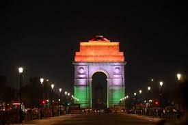

The India Gate (formerly known as the All India War Memorial) is a war memorial located near the Rajpath on
the eastern edge of the "ceremonial axis" of New Delhi, formerly called duty path. It stands as a memorial
to 84,000 soldiers of the British Indian Army who died between 1914 and 1921 in the First World War, in
France, Flanders, Mesopotamia, Persia, East Africa, Gallipoli and elsewhere in the Near and the Far East,
and the Third Anglo-Afghan War. 13,300 servicemen's names, including some soldiers and officers from the
United Kingdom, are inscribed on the gate.[2] Designed by Sir Edwin Lutyens, the gate evokes the
architectural style of the memorial arch such as the Arch of Constantine, in Rome, and is often compared to
the Arc de Triomphe in Paris, and the Gateway of India in Mumbai.
Following the Bangladesh Liberation war in 1972, a structure consisting of a black marble plinth with a reversed
rifle, capped by a war helmet and bounded by four eternal flames, was built beneath the archway. This structure,
called Amar Jawan Jyoti (Flame of the Immortal Soldier), has since 1971 served as India's tomb of the unknown
soldier. India Gate is counted amongst the largest war memorials in India and every Republic Day, the Prime
Minister visits the gate to pay their tributes to the Amar Jawan Jyoti, following which the Republic Day parade
starts. India Gate is often a location for civil society protests.